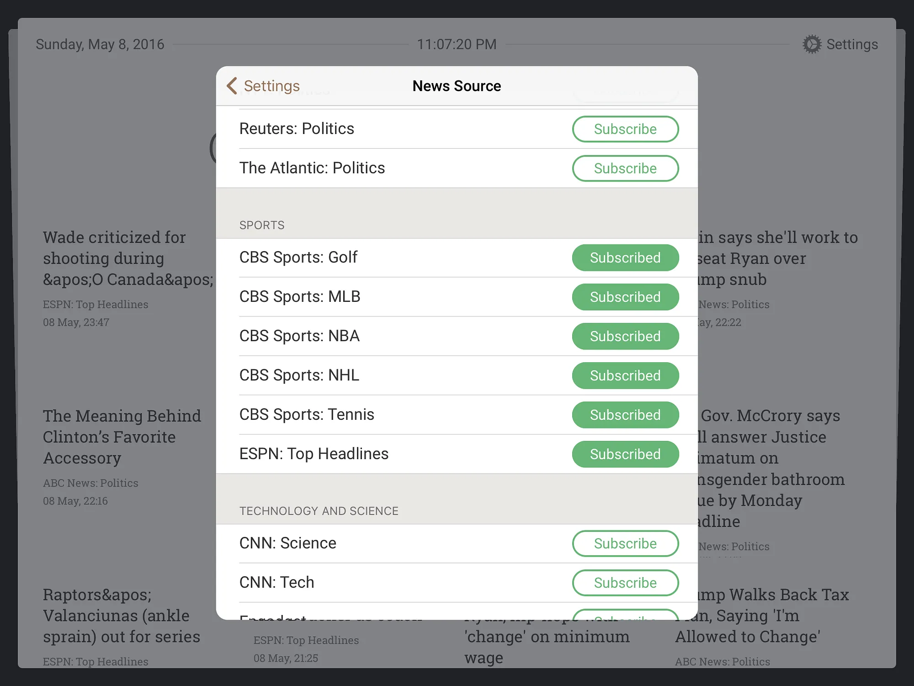
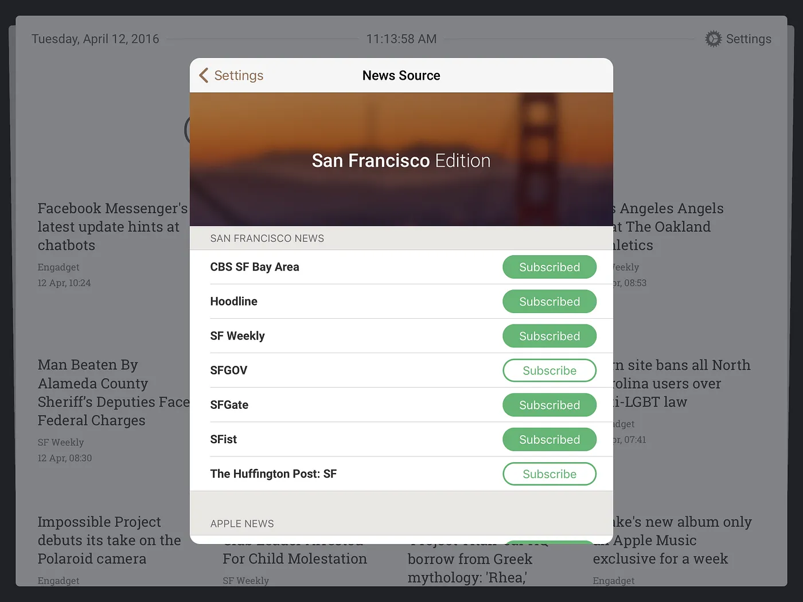
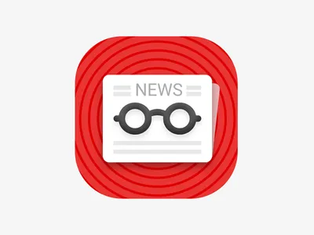
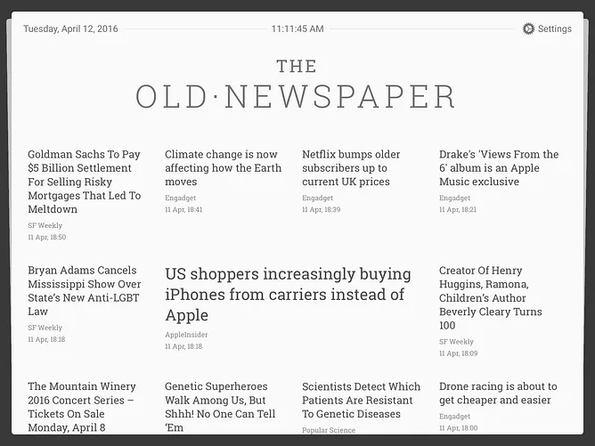
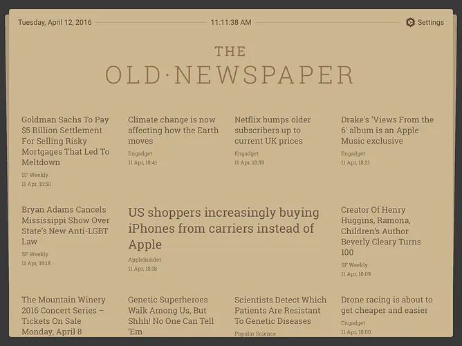
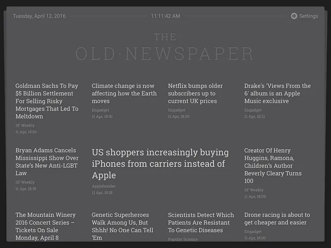

New App Release Newspaper for iPad
The Old Newspaper app released on App Store.

Story behind the app
I just finished a side project I always wanted to do: turn the iPad into a newspaper. From the first moment I saw the iPad, I saw it as a book replacement. The surface we can fill with dynamic information, but unlike the iPhone, it has the same format as books. Or, yes, a newspaper.
I started this project a year ago, in 2015. It was even before Apple introduced Apple News. And that changed my app ideology a little bit. Instead of making an app for everyone, I decide to separate readers by their location.
App value
I made a research about other news and RSS apps that were already on the iOS market and found that many of them are not so easy to use from the start. Many apps ask users to select favorite sources. Some ask for registration, some, like Flipboard, don’t let you use the app until you subscribe to at least 5 sources 😧 Can you imagine the good old newspaper not letting you read it until you do something?
Such barriers were built into apps because developers wanted to separate audiences and give different people different news sources. I realized that I couldn’t make a big app for a huge audience, and at the same time I didn’t want to make another Apple News or Digg Reader or Flipboard. So core idea of my app is: you already have pre-subscribed news sources, part of them about news from your city.
The first version of the app was only for San Franciscans. So if you’re from SF, you can read world news, news about technology, science, politics, but also about events around you. If you’re not from SF, you can turn off these sources and just read all other news.

In future updates, more cities will be added and the app will automatically detect your location to switch news sources. Newspaper Interface
The app is very easy to use, you can literally open and start it without any additional tweaks, registrations, customizations. You see the news grid, scroll it, tap to read the news.
News are web pages, of course. So each news item opened in Safari View Controller (technically called SFSafariViewController), which already has Cookies, Content Blocker, Reader, Sharing, Reading List. The reader can be customized if you want to increase the font size, make the text bigger or darker. bigger or darker.
App icon:

Settings for advanced users
The Old·Newspaper has various themes and news font grid sizes.
  
You can also enable a feature called “automatic reader view” so that every article will automatically open in Safari’s reader view.
Currently the app is in beta, we’re looking for beta testers. The app is released for iPad only, no iPhone version for now.